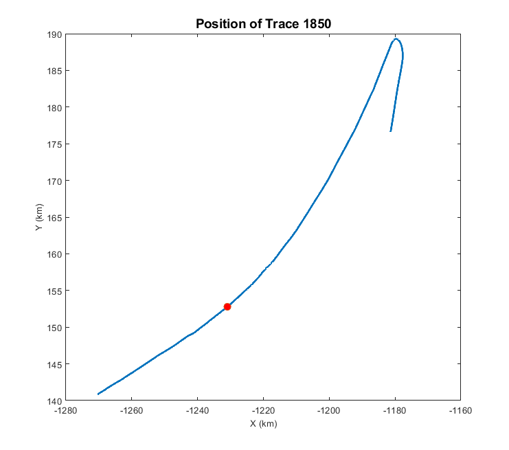

Checking Airborne Radar Echo Sounding data (MATLAB)#
Author: Julien Bodart (@julbod)
Date: 02/12/2021
Aim#
The goal of this page is to provide the basic steps required to open NetCDF and SEG-Y data in MATLAB. This tutorial is not an interactive jupyter-notebook environment, so it requires users to copy/paste the functions displayed here onto their own MATLAB installation. This tutorial was made using MATLAB R2021a version. If users experience issues reading in the NetCDF files (e.g. ‘UNSUPPORTED DATATYPE’ error messages) the advice is to use the ‘h5read’ or ‘h5disp’ functions instead of ‘ncdisp’.
MATLAB Libraries#
For the code to run, it is important to install the correct MATLAB libraries. In particular the following libraries are crucial for the code to run:
SegyMat Read and write SEGY files
Other SEG-Y toolboxes exist out there of course, but this one does the job! Once you have download the SegyMat library, simply tell MATLAB where the library lives on your PC, as follows:
addpath (genpath('D:/British_Antarctic_Survey/Toolbox')); % set path for toolbox
Check the NetCDF files#
Example given for GRADES-IMAGE data.
Data available for download here: Corr, H. (2021). Processed airborne radio-echo sounding data from the GRADES-IMAGE survey covering the Evans and Rutford Ice Streams, and ice rises in the Ronne Ice Shelf, West Antarctica (2006/2007) (Version 1.0) [Data set]. NERC EDS UK Polar Data Centre. https://doi.org/10.5285/C7EA5697-87E3-4529-A0DD-089A2ED638FB
Read the NetCDF and display metadata (including variables dimensions)#
cd 'D:/British_Antarctic_Survey/data/GRADES_IMAGE_0607/netcdf/' % tell MATLAB where the NetCDF file lives
ncdf_pth = 'D:/British_Antarctic_Survey/data/GRADES_IMAGE_0607/netcdf/GRADES_IMAGE_G06.nc'; % specify path of NetCDF
ncdisp(ncdf_pth) % display NetCDF metadata and variables
Load the data#
We only extract nine variables here, however the NetCDF contain 17 in total (see above).
% open the NetCDF file
ncid = netcdf.open('GRADES_IMAGE_G06.nc','NC_NOWRITE');
% read NetCDF radar variables
traces_nc = ncread(ncdf_pth,'traces'); % read in traces array
chirpData = ncread(ncdf_pth,'chirp_data'); % read in chirp radar data array
pulseData = ncread(ncdf_pth,'pulse_data'); % read in pulse radar data array
chirpData = chirpData'; % rotate array in case the dimensions are the wrong way around
pulseData = pulseData'; % rotate array in case the dimensions are the wrong way around
chirpData = pow2db(chirpData); % convert the data from power to decibels using log function for visualisation
pulseData = pow2db(pulseData); % convert the data from power to decibels using log function for visualisation
% X and Y coordinates
x_nc = ncread(ncdf_pth,'x_coordinates'); % read in x positions array (Polar Stereographic EPSG 3031)
y_nc = ncread(ncdf_pth,'y_coordinates'); % read in y positions array (Polar Stereographic EPSG 3031)
x_nc_km = x_nc/1000; % transform meters to kilometers
y_nc_km = y_nc/1000; % transform meters to kilometers
% surface and bed picks
surface_pick = ncread(ncdf_pth,'surface_pick_layerData'); % read in surface pick array
bed_pick = ncread(ncdf_pth,'bed_pick_layerData'); % read in bed pick array
surface_pick (surface_pick==-9999) = NaN; % convert -9999 to NaNs for plotting
bed_pick (bed_pick==-9999) = NaN; % convert -9999 to NaNs for plotting
% surface and bed elevations
surface_elevation = ncread(ncdf_pth,'surface_altitude_layerData'); % read in surface altitude array
bed_elevation = ncread(ncdf_pth,'bed_altitude_layerData'); % read in bed altitude array
surface_elevation (surface_elevation==-9999) = NaN; % convert -9999 to NaNs for plotting
bed_elevation (bed_pick==-9999) = NaN; % convert -9999 to NaNs for plotting
Plot the processed radargrams#
figure;
imagesc([traces_nc],[], chirpData(1:600,:)) % plot radar data (limit y-axis extent)
hold on
plot(traces_nc,surface_pick, 'color', 'r','LineStyle','--','LineWidth',1.5) % plot surface pick
plot(traces_nc,bed_pick, 'color', 'b','LineStyle','--','LineWidth',1.5) % plot bed pick
colormap(flipud(gray)); % get gray colormap (max values = black, min values = white)
title('Radar Data - Chirp (NetCDF)', 'FontSize', 14); % set title
xlabel('Trace Number','FontSize',10); % set axis title
ylabel('Fast Time Sample Number','FontSize',10); % set axis title
colorbar % plot colorbar
caxis([10 60]) % limit colorbar values
hold off
figure;
imagesc([traces_nc],[], pulseData(1:600,:)) % plot radar data (limit y-axis extent)
hold on
plot(traces_nc,surface_pick, 'color', 'r','LineStyle','--','LineWidth',1.5) % plot surface pick
plot(traces_nc,bed_pick, 'color', 'b','LineStyle','--','LineWidth',1.5) % plot bed pick
colormap(flipud(gray)); % get gray colormap (max values = black, min values = white)
title('Radar Data - Pulse (NetCDF)', 'FontSize', 14); % set title
xlabel('Trace Number','FontSize',10); % set axis title
ylabel('Fast Time Sample Number','FontSize',10); % set axis title
colorbar % plot colorbar
hold off

figure;
% first plot the radargram with specific trace marked as red vertical line
subplot(1,2,1)
imagesc([traces_nc],[], pulseData(1:600,:)) % plot radar data (limit y-axis extent)
hold on
plot(traces_nc,surface_pick, 'color', 'r','LineStyle','--','LineWidth',1.5) % plot surface pick
plot(traces_nc,bed_pick, 'color', 'b','LineStyle','--','LineWidth',1.5) % plot bed pick
xline(1850,'Color','r', 'LineWidth',1.2) % plot position of trace in second plot
colormap(flipud(gray)); % get gray colormap (max values = black, min values = white)
title('Radar Data - Pulse (NetCDF)', 'FontSize', 14); % set title
xlabel('Trace Number','FontSize',10); % set axis title
ylabel('Fast Time Sample Number','FontSize',10); % set axis title
colorbar % plot colorbar
hold on
% then plot trace plot with amplitude and sampling window
subplot(1,2,2)
plot(chirpData(1:600, 1850)) % plot surface pick
title('Trace 1850 - Radar Data', 'FontSize', 14) % set title
xlabel('Fast Time Sample Number', 'Fontsize', 10) % set axis title
ylabel('Amplitude (dB)', 'FontSize', 10) % set axis title
ax = gca; % get axis
axis(ax, 'tight') % control axes
xlim(ax, xlim(ax) + [-1,1]*range(xlim(ax)).* 0.05) % add white space before and after data for aesthetic
ylim(ax, ylim(ax) + [-1,1]*range(ylim(ax)).* 0.05) % add white space before and after data for aesthetic
hold off
Plot geographic location of trace on map#
This is a fairly basic map, but does the trick. If you want to add fancy basemaps in the background (e.g. BEDMAP/BedMachine elevations, or MEASURES ice-flow speeds), visit Chad Green’s Antarctic Mapping Toolbox (AMP; https://uk.mathworks.com/matlabcentral/fileexchange/47638-antarctic-mapping-tools)
figure;
plot(x_nc_km, y_nc_km,'color', [0, 0.4470, 0.7410],'LineWidth',2.4) % plot entire profile
hold on
scatter (x_nc_km(1850), y_nc_km(1850), 60,'o', 'MarkerFaceColor', 'r') % plot specific trace position as red dot
title('Position of Trace 1850', 'FontSize', 14) % set title
xlabel('X (km)','FontSize',10); % set axis title
ylabel('Y (km)','FontSize',10); % set axis title
hold off

Plot surface and bed elevations along flightline#
figure;
plot(traces_nc, surface_elevation,'color', [0, 0.4470, 0.7410],'LineWidth',1.5) % plot surface elevation for entire profile
hold on
plot(traces_nc, bed_elevation,'color', [0.9290 0.6940 0.1250],'LineWidth',1.5) % plot bed elevation for entire profile
title('Elevation Profile for flightline G06', 'FontSize', 14) % set title
xlabel('Trace Number','FontSize',10); % set axis title
ylabel('Elevation (meters WGS84)','FontSize',10); % set axis title
ylim([-1800 400]) % set y-axis limits
hold off
ax = gca; % get axis
axis(ax, 'tight') % control axes
xlim(ax, xlim(ax) + [-1,1]*range(xlim(ax)).* 0.05) % add white space before and after data for aesthetic
ylim(ax, ylim(ax) + [-1,1]*range(ylim(ax)).* 0.05) % add white space before and after data for aesthetic
Check the SEG-Y files#
Load the data for chirp and pulse#
Give here the path to where the desired files lives on your PC
segy_data_chirp = 'D:/British_Antarctic_Survey/data/GRADES_IMAGE_0607/segy/chirp/G06_chirp.segy'
segy_data_pulse = 'D:/British_Antarctic_Survey/data/GRADES_IMAGE_0607/segy/pulse/G06_pulse.segy'
Read the SEG-Ys#
The data is read using the SEGYMat MATLAB library (see instructions at top of this page).
Note that it is much quicker to read the data without loading in the byte header information (see pulse below). For more information on what is stored in the SEG-Y, refer to the DMS entry metadata for the specific dataset.
[segy_chirp,SegyTraceHeaders,SegyHeader] = ReadSegy(segy_data_chirp); % read chirp data as well as byte header information
[segy_pulse] = ReadSegy(segy_data_pulse); % read pulse data only (byte header information can be added as above if needed)
segy_chirp = pow2db(segy_chirp); % convert the data from power to decibels using log function for visualisation
segy_pulse = pow2db(segy_pulse); % convert the data from power to decibels using log function for visualisation
SegyHeader % read SEG-Y header
Read traces#
Let’s read the structure information for the first radar trace in the SEG-Y file
trace = SegyTraceHeaders(1)
Let’s then extract all the traces within the SEG-Y file byte header ‘TraceNumber’
traces = ReadSegyTraceHeaderValue(segy_data_chirp,'key','TraceSequenceLine');
traces_length = length(traces) % get length of traces variable
and then the X/Y positions within the SEG-Y file
x_segy = ReadSegyTraceHeaderValue(segy_data_chirp,'key','SourceX'); % Careful: this in meters and rounded to nearest integer
y_segy = ReadSegyTraceHeaderValue(segy_data_chirp,'key','SourceY'); % Careful: this in meters and rounded to nearest integer
finally, let's read in the PRINumber stored in the SEG-Y
PRInum = ReadSegyTraceHeaderValue(segy_data_chirp,'key','FieldRecord');
Plot the processed radargrams#
figure;
imagesc([traces],[], segy_chirp(1:600,:)) % plot radar data (limit y-axis extent)
colormap(flipud(gray)); % get gray colormap (max values = black, min values = white)
title('Radar Data - Chirp (SEG-Y)', 'FontSize', 14); % set title
xlabel('Trace Number','FontSize',10); % set axis title
ylabel('Fast Time Sample Number','FontSize',10); % set axis title
colorbar % plot colorbar
caxis([10 60]) % limit colorbar values
figure;
imagesc([traces],[], segy_pulse(1:600,:)) % plot radar data (limit y-axis extent)
colormap(flipud(gray)); % get gray colormap (max values = black, min values = white)
title('Radar Data - Pulse (SEG-Y)', 'FontSize', 14); % set title
xlabel('Trace Number','FontSize',10); % set axis title
ylabel('Fast Time Sample Number','FontSize',10); % set axis title
colorbar % plot colorbar